京张基态 / GROUND STATE JINGZHANG
AI只能停靠在旁置接口，不能占用城市的公共基态。五条东西缝合线先按证据分段核验，再逐段进入永久公共网络；AI服务后插入、可撤出、可复位，任何模型、设备或运营退出都不得切断已核公共通行、人工服务与基本公共权益。
京张基态 / GROUND STATE JINGZHANG
永久公共基底 · 可逆界面
城市可以切换状态，公共性不能下线。
AI只能停靠在旁置接口，不能占用城市的公共基态。五条东西缝合线先按证据分段核验，再逐段进入永久公共网络；AI服务后插入、可撤出、可复位，任何模型、设备或运营退出都不得切断已核公共通行、人工服务与基本公共权益。
京张基态：通过双侧公共界面与证据分级横向缝合，修复纵向基础设施造成的东西割裂，形成由三类城市房间承接、可人工否决并可回到永久公共基底的城市接口网。
京张基态把百年铁路的公共记忆、中关村“知识走向社会”的创新传统和 AI 时代可审计的城市行动串成一条公共叙事；经核验的铁路事实形成永久标记，开放知识转化为课程与共同研究，AI 建议和人工裁决成为可追溯的当代档案。空间上，证据分级城市缝合梯以京张公共空间序列和小月河蓝绿系统为两条南北界面，以已确认系统关系、候选审计缝合和明确缺口组织东西联系；分布式城市房间承接知识服务、公共测试与到达。房间内，固定通行、座椅、遮荫、导向、历史解释和人工服务构成永久公共基底；EDGE-HOUSE、TERRACED FORECOURT、LINEAR SIDE-BAY 三类可逆界面只在获批时展开。AI 不能批准部署，人始终保留批准、否决、冻结、申诉处理和退役权；AI 离线时，公共基底与人工流程照常工作。
评审路径 · 问题与核心判断
京张基态以两条南北公共界面和五条东西候选缝合线定义不依赖 AI 的永久公共网络目标，再由众智园、AI 原点与大钟寺三类城市房间承接不同任务。当前 S1–S5 均按背景障碍断开，0 条完成全线连续性核验；只有逐段通过权利、安全、无障碍与维护核验后，才进入永久公共基底。唯一旗舰位于大钟寺：AI 只能进入不占公共净线的单侧微阶台概念包络；发生拥堵、故障或责任缺失时，人工冻结、撤收并验收回归。
四级叙事与独占性检查
一句话： 以五条东西缝合线修复京张纵向基础设施造成的公共断裂，并把所有AI设备限制在可撤出的旁置接口中。
100字、300字与3分钟版本存入 visual/assets/narrative-layers.json；四个版本均必须同时包含横向缝合、旁置接口与公共基态。核心判断不能只替换地名后用于其他城市。
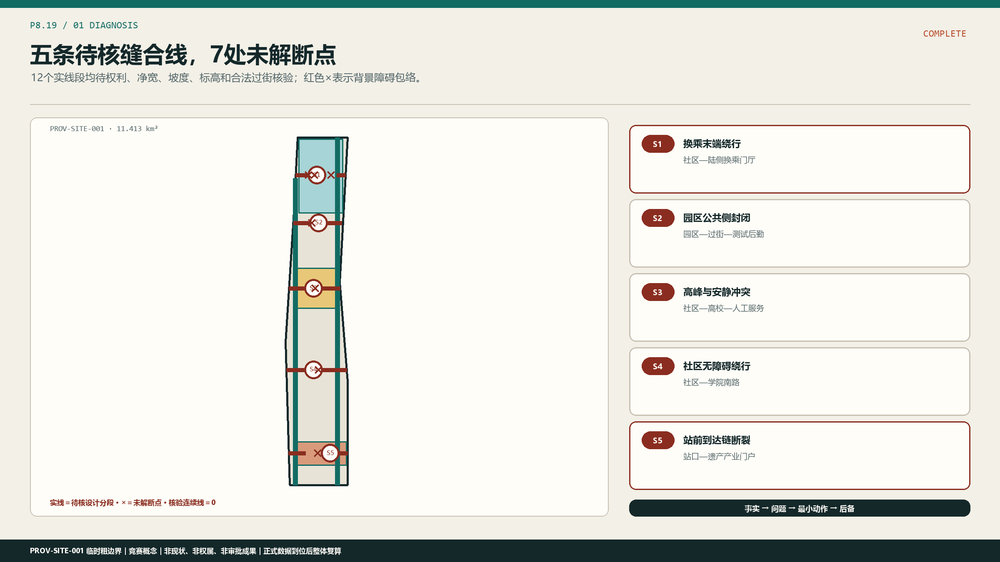
图 01｜现状诊断：纵向基础设施强化南北联系，但五处东西公共联系分别存在换乘、园区、安静、社区和站前断裂。临时粗边界，仅作竞赛概念定位。
设计依据与资料清单
设计首先区分“已经知道的场地事实”和“仍待核实的实施条件”。官方公告给出约 43.6 km² 统筹研究范围、约 11.4 km² 总体设计范围，以及三个重点区域合计约 368.4 ha；众智园约 192.1 ha、AI 原点约 104.3 ha、大钟寺约 72.0 ha。这些面积来自官方文字，不由当前工作边界反推。来源 指标 指标
场地判断来自当前临时几何、日期明确的公开背景与可回溯设计图层：AI 原点以成府路公共侧作为待核到达关系；大钟寺把东侧到达净线作为准入目标，而非已核连续路径；众智园验证点位于 0807-604 与小月河之间的陆侧候选条件，水陆边界、公共进入和工程接口仍须核实。组织方精确范围、权属、控规、建筑测绘、站口流量和市政容量尚未齐备，因此图中范围只用于概念落位，不构成法定红线或精确面积。来源 来源 深度
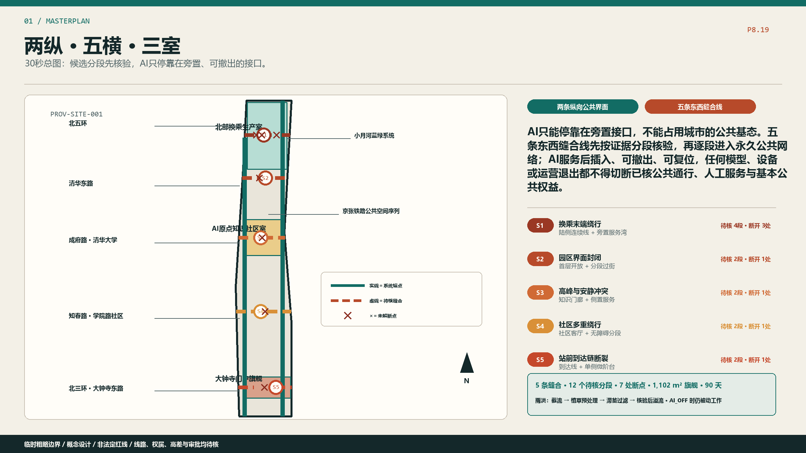
图 01 用同一视窗、同一方向和同一城市肌理建立 Existing → Intervention → Proposed / Retained 证据链：Existing 只显示 OSM 中等置信城市背景、分时态工程关系和五个已定位阻隔；Intervention 叠加双公共界面、五个候选证据包、六个两翼入口和三类城市房间；Proposed / Retained 以三张真实背景局部窗标出“默认保留、准入后的局部永久基底、权利待核的可逆边缘候选、缺口 / 不连接”四种状态。所有建筑均默认保留且不推定拆改动作，只有登记的低置信提案几何可作为后续准入候选；普通道路、水系和未知缺口原位保留。OSM 仅用于建筑、道路、轨道、水系和绿地的背景核对，不是法定边界、产权、测绘、合法通路或建筑拆改留决定；正式 11.4 km² 边界几何到位后必须整体重投影。来源 空间数据 空间数据
设计只在证据允许的位置作决定：已核实的路径与公共侧条件作为基底；三处载体作为可撤回的局部原型；连续性未知之处明确留白，并以普通街道、公共交通和人工服务作为后备。正式数据到位后，边界相关图层、比例和指标必须整体复核。
评审路径 · 11.4 km²总体结构
两条南北公共界面构成概念骨架，S1–S5 是五个独立证据包，不被画成未经核验的连续新路。截至本轮，五线共 12 个待核设计分段、7 处未解断点、0 条核验连续线；图中实线只表示待核分段，红色 × 表示公开背景障碍包络，不能证明路权、净宽、坡度、标高或合法过街。每条线同时记录连接对象、证据等级、最小动作、责任角色、失败后备和实施期；正式边界或任一准入门变化时，所有几何、指标与图纸整体重算。空间数据 来源
图 02｜总体结构：两纵五横三室与大钟寺一期旗舰。
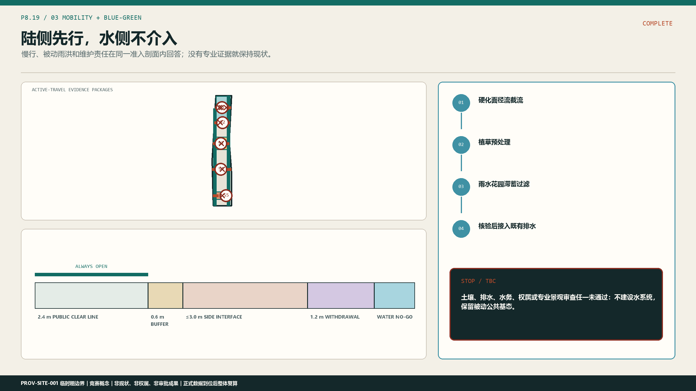
图 03｜慢行、蓝绿与维护准入：水侧不介入，陆侧被动雨洪与通行先接受专业核验。
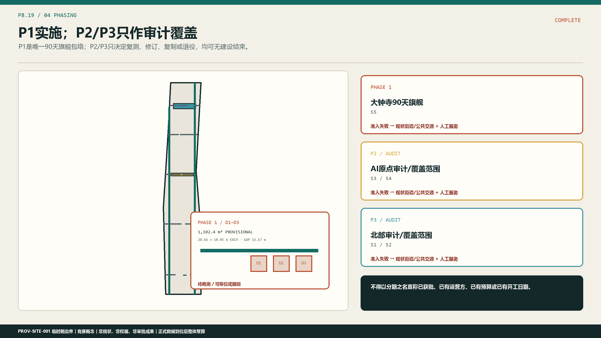
图 04｜三期实施：大钟寺旗舰—AI原点人工服务—众智园测试后勤；任一阶段失败均回到现状交通与人工服务。
三层范围工作框架
三层范围承担不同问题，而不是把同一图形放大三次。统筹研究范围回答产业联系、人才服务与区域复测；总体设计范围组织公共空间、慢行、蓝绿与更新机制；三个重点区域则用可触摸、可维护、可退出的载体验证方案。每项关键决定均沿“场地事实—空间问题—设计机制—人工责任—证据图件”展开。深度
范围稳健性规则以当前官方仓库中的 PROV-SITE-001 为唯一提交范围。该几何复算约 11.413 km²，与任务书约 11.4 km² 的文字口径一致，但其属性仍是 official_boundary=false、boundary_precision=provisional_rough：只用于方案生成、展示与临时自检，不是法定红线。公共空间、绿地和实施范围均在该几何内重新推导并保留概念 / TBC 状态；未来获得正式或经许可的精确边界后，必须连同来源、版本、坐标系和转换方法整体替换并重算。空间数据 深度
核心命题与五种状态
京张基态：通过双侧公共界面与证据分级横向缝合，修复纵向基础设施造成的东西割裂，形成由三类城市房间承接、可人工否决并可回到永久公共基底的城市接口网。
图 01 先同框解释现状肌理与阻隔，再拆出可核验的双界面、五个横向包与三处城市房间，最后明确“准入后新增什么、默认保留什么、哪些缺口继续存在”；工作包络不能被误读为法定范围。
治理五态定义为：基态 BASE，载体收纳且永久公共服务持续；建议 ADVICE，AI 只给出可解释建议、空间保持不动；启用 ACTIVE，经人工批准并完成检查后，获批载体在硬边界内展开；冻结 FREEZE，出现风险、超时或责任缺失时由人工锁定局部载体；回归 RETURN，载体可见地撤收并由人工确认后回到 BASE。ADVICE 不改变物理空间，因此网页与图纸只演示 BASE—ACTIVE—FREEZE—RETURN 四个物理状态；TRANSITION 只是 ACTIVE 或 RETURN 过程中的受控动作阶段，不是第六种状态。AI 只能在已核条件中提出建议，不能自行改变任何空间状态。
六项任务如何变成空间
| 任务 | 空间与运营转化 | 评委可见的证明 |
|---|---|---|
| 总体概念、命名与视觉 | “断续基线”作为总标志，三类载体各有子符号；延展到现场铭牌、网页状态和年度活动 | 总体结构、符号家族、状态图例 |
| 全球案例与创新生态 | 六案例只转移机制与适用条件；八要素由两翼组织成服务回路 | 案例矩阵、生态闭环 |
| AI+生活场景 | 四类核心对象在三地获得不同服务；十二场景均有人工责任与 AI 离线后备 | 服务矩阵、三条 AI 原生链 |
| 公共空间与地标 | 永久基底优先；三个地标是能问询、纠错、停用的公共设施 | 地区平面、剖面、地标动作 |
| 百年文化叙事 | 铁路事实—开放知识—AI版本记录映射到三地公共行动 | 文化路线与可纠错时间标记 |
| 年度运营 | 从公共问题到场地测试、公开复盘、复制或停止 | 年度环、责任与退出条件 |
来源 指标 指标
统筹研究范围产业与未来城市研究
统筹层不再把“创新带”理解为一条均质开发轴，而是由三类分布式城市房间和两类跨区接口组成的证据网络。三大定位是百年京张文化带、都市 AI 生活体验带和 AI 融合创新带；五大功能分别对应公共知识入口、全栈创新验证、场景赋能、日常服务和可问责治理。科技服务翼通过高校、园区和机构公共侧的门槛与服务房间承接资格核验、预约、专家转介和结果记录；场景赋能翼通过小月河陆侧及公共空间边缘的测试侧湾与观察房间承接问题征集、风险筛选、现场测试、反馈和停止。两翼不是新增土地色带、官方分区或连续道路，而是形态、公共空间和运行条件均不同的空间载体网络。标准 深度
六个案例：转移机制，不复制形态
| 案例 | 可转移原则 | 适用条件 | 应避免 |
|---|---|---|---|
| Kendall Square / Volpe | 创新开发必须兑现可使用的公共回报 | 公共侧边界与审议责任明确 | 照搬美国分区数值或开发权关系 |
| MaRS Discovery District | 中立转介与分阶段商业化 | 目录更新、利益冲突披露、可停止 | 品牌、物业规模与融资绩效移植 |
| Paris-Saclay | 多片区协作并逐地复盘 | 各地独立批准、环境约束优先 | 把新城尺度或联盟关系当作既成条件 |
| Punggol Digital District | 在真实环境中做有界测试 | 数据权限、时效、急停和回退齐备 | 假设统一开发主体与平台能力 |
| Seoul AI Hub | 模型—工具—算力—验证—转化的全栈链 | 各环节责任、准入和撤销清楚 | 宣称本地已有同等设施与绩效 |
| Testbed Helsinki | 开放问题、城市现场、证据与停止 | 场地主责和公共利益边界明确 | 用创新口号替代公共问题与退出条件 |
公共回报、转介与多片区协作的比较依据前三项案例资料。来源 来源 来源
真实环境测试、全栈支持与城市试验的比较依据后三项案例资料。来源 来源 来源
八要素与条件性区域复测
基础研究、工具与算力、人才学习、企业孵化、资本与采购转介、真实场景、公共治理、国际交流八个要素，以“开放问题—能力匹配—小规模测试—公开证据—复制或停止”连接。人才获得公开课、导师与真实问题；企业获得有边界的验证和人工转介；居民获得不依赖 App 的公共服务与申诉；公共治理获得可解释、可否决、可退役的决策记录。
成熟机制可向北苑、未来科学城、怀柔、亦庄或京津冀其他地点提出重新核权、重新设基线、从最小状态复测的邀请，但本方案不声称已建立合作、共同运营或跨区连续空间。来源 来源
总体设计范围城市更新与控规深度城市设计
总体设计形成一架证据分级城市缝合梯。主系统由京张公共界面和公开资料所记录、带日期施工状态的小月河陆侧蓝绿界面两条南北关系构成；次系统依托既有街道与公共交通完成现实到达；实施单元是三类分布式城市房间。中关村科技服务翼以高校、园区和社区公共门槛及服务房间进入，场景赋能翼以小月河陆侧和其他已核公共边缘的测试侧湾与观察房间进入。北部换乘审计点、清华东路、成府路、知春路和大钟寺形成五个可独立推进的横向核验包，而非一条被想象出来的连续新路。清华东路公开资料可支持京张公园—学院路—小月河的系统关系，但不能证明整条慢行已完成；其余横向关系保持候选审计或明确缺口。任何接口只有在权属、安全、无障碍与维护四项核验通过后才能逐段进入永久公共基底；未通过时，断点保持可见，普通街道与公共交通承担连接。来源 空间数据 深度
图 01 从日期明确的 OSM 背景中选择一组既有到达层级，而不是再画一条虚构绿道：北五环、北四环、北三环、清华东路、成府路、知春路、大钟寺东路和西直门外大街作为一级街道背景，学院路、中关村东路、西土城路、双清路、小月河西路和高梁桥斜街作为次级到达背景，轨道 / 公交与仅在 access=yes 时采用的公共空间只作支撑背景。它们均不证明合法通行或连续慢行；五处审计包以“停止 / 既有后备”挂接，失败时回到映射街道和公共交通。来源
两翼的两套可定位空间系统
两翼不是两块可换名的分区，而是沿北部换乘、清华东路、AI 原点 / 成府路、知春路和大钟寺五处定位点展开的两套空间接口系统。中关村科技服务翼以既有校园、院所、园区和商办的公共侧门槛为载体：固定人工服务窗、安静等候边和单室 EDGE-HOUSE 形成分布式知识服务前沿，不进入封闭院区，也不把机构自动归入该翼。小月河场景赋能翼以公开资料所记录的带日期施工状态河道陆侧、社区边缘和维护接口为载体：带日期事件输入、观察点、条件测试侧湾与水侧 NO-GO 形成证据前沿，不宣称当前施工状态、连续滨水开放或水力系统。前者必须有公共主体、值守人员和可逆房间，后者必须有带日期输入、人工准入和 AI_OFF 基态；交换标签后职责链即失效。下表六行是两套系统在三类房间中的责任交叉表，不是六段连续入口几何。
| 翼—场地入口 | 既有侧与空间载体 | 准入证据 | 停止 / 退出 |
|---|---|---|---|
| TS-AI · 科技服务翼—AI 原点 | 成府路公共侧 → EDGE-HOUSE 知识门槛 | 公共侧权利、净线、安静与人工服务 | 任一不成立则不展开；房间关闭，通行保持 |
| TS-DZS · 科技服务翼—大钟寺 | 商办 / 文化复合界面候选侧 → 人工转介门槛 | 界面可达、无障碍、服务中立与属地许可 | 筛客、拥堵或投诉无法处理则关闭转介点 |
| TS-NORTH · 科技服务翼—北部换乘 | 园区陆侧候选门槛 → 固定信息与人工服务点 | 公共可达、载体方同意与维护接管 | 无人工接管或边界不清则不设服务点 |
| SE-AI · 场景赋能翼—AI 原点 | 社区 / 校园混合侧候选门槛 → 单室受控服务测试 | 合格公共问题、数据最小化与逐场人工批准 | 安静、公平或净线受损即回到 BASE |
| SE-DZS · 场景赋能翼—大钟寺 | 交通到达公共侧 → 单侧 TERRACED FORECOURT 观察单元 | 预约类别、到达观察、无障碍与安全复核 | 无法人工疏导或取消则不启用；阶台撤收 |
| SE-NORTH · 场景赋能翼—北部换乘 | 小月河陆侧 → LINEAR SIDE-BAY 测试侧湾 | 水务维护边界、具名责任、急停与测试包络 | AI_OFF 或近失触发机械锁定与人工复核 |
六项责任关系的具体边界、权属与连续性仍待正式资料和现场核验；图中未知段保持断开。Explorer 另以同地点、同任务、同准入门的 A / B / C 反事实比较公开说明选案：AI 原点拒绝侵入净线的双侧房间，大钟寺拒绝切断到达线的中央 / 四象限阶台，北部拒绝未核水侧平台和虚构连续滨水线；入选方案也公开容量、面积或亲水体验的损失。空间数据 空间数据
下图把两翼责任转译为三区三条不同的物理链：科技服务翼主要提供有界的知识与人工服务输入，场景赋能翼只在人工批准后提供测试或到达事件；AI 仅建议，人工决定后才改变边缘载体，公共净线始终保持。AI 离线或任一准入门失败时，载体锁定或撤出，人工后备继续；图示不推定建筑拆改、产权或法定用途。来源
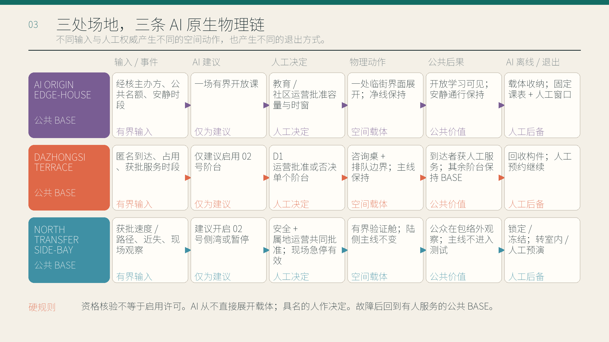
永久公共基底组件与品牌系统
十一项组件包括连续净线、座椅与遮荫、固定照明、双语导向、历史时间标记、人工问询、无障碍停留、机械锁定、排水与维护接口、纸面规则、纠错与申诉入口。它们优先服务日常生活，不以活动或数字系统是否在线为前提。
三类接口采用同一组下一阶段设计控制目标：公共净线目标 2.4 m、净线与可逆带之间 0.6 m 缓冲、单处可逆带不超过 3.0 m、维护目标带 1.2 m，横坡目标不大于 2%；纵坡必须现场测量，超过 5% 时另做独立无障碍解法。这些数值是竞赛概念的可测控制，不是现状测量或已满足规范的结论；只有正式测绘、权属核验和无障碍、交通、水务、消防及维护审查通过后才可采用。日常基态分别承载“座椅+人工窗口+通行”“到达+等候+导向”“步行+休息+工程信息”；AI 原点只向公共侧展开，大钟寺在高差或下穿冲突时取消单元，北部侧湾不跨河且不得占用水务维护带。深度
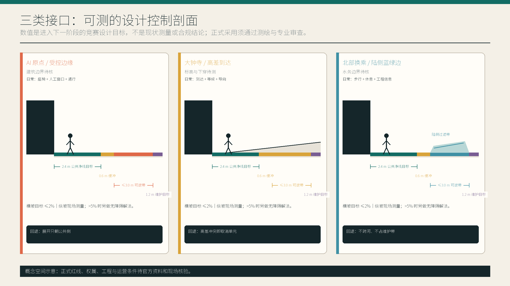
“断续基线”总标志由一条图形化公共底线和三个可开合片段组成：底线表达不能下线的公共性规范，不代表场地现状已有连续通路；三个片段分别成为 EDGE-HOUSE 的门框符号、TERRACED FORECOURT 的台阶符号和 LINEAR SIDE-BAY 的侧湾符号。它可用于现场铭牌、网页状态、活动手册与贡献记录，但不冒充市政导视或官方标识。地名、无障碍和安全信息始终服从经批准的公共导视标准。
年度活动采用可辨认的 “基态开放季 / GROUND STATE OPEN SEASON” 传播系统：断续基线是活动识别，三类载体子符号标明发生地点，BASE / ADVICE / ACTIVE / FREEZE / RETURN 状态章标明物理条件，来源—责任—有效期页签提示内容是否仍有效。现场海报、网页、双语简报和国际活动材料沿用同一结构。它表达的是一种克制、开放、可纠错的城市气质——铁路工程的清晰、中关村知识共享和 AI 决策透明并置；国际传播以可核问题、公开证据和退出记录为内容，不用未来感口号代替场地事实。
相对强度与体量
强度只作场地间相对判断：AI 原点以公共知识门槛和低层可逆边界为主；大钟寺以单侧、单单元启用控制峰值到达；众智园只在核验通过的陆侧净线分段之外设置窄侧湾。任何高度、容积率、建筑面积或拆建结论都等待官方控规、测绘和专业审查。深度 标准
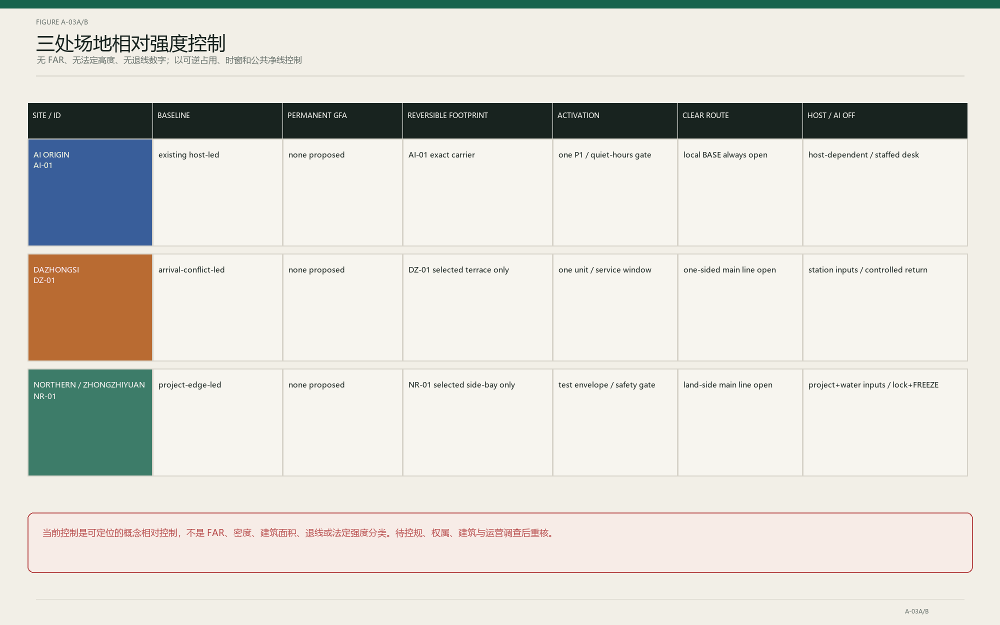
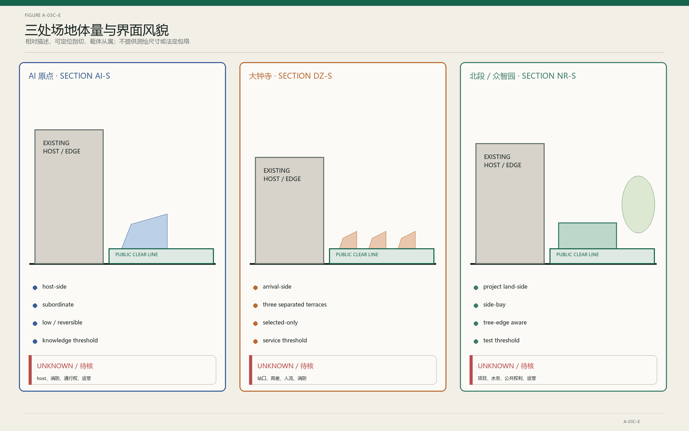
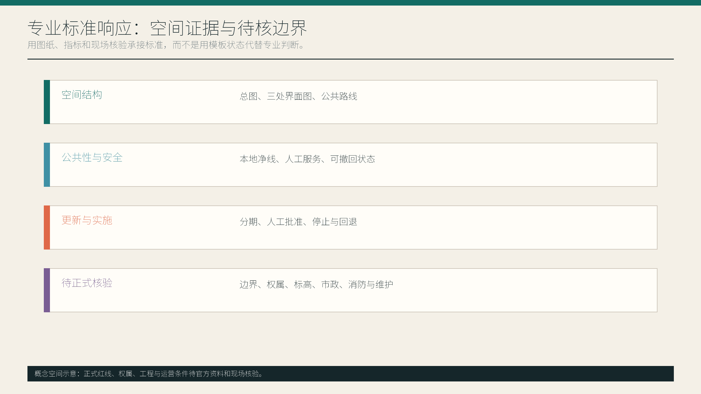
评审路径 · 三处重点区
三地以不同失败模式、人工角色、空间构件和普通人任务链进入总体结构，遮住名称后仍应可从图面识别；它们不是同一状态模板的三次复制。空间数据 深度
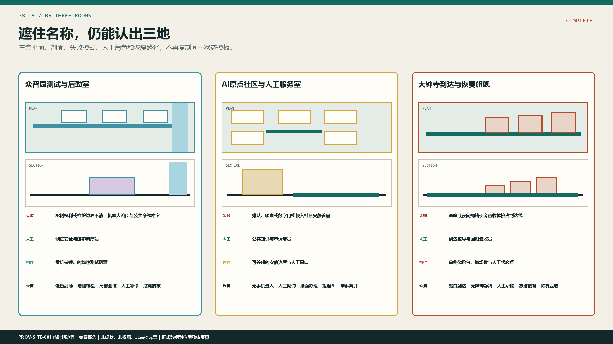
图 05｜三地非同构证据：众智园测试后勤、AI原点社区人工服务、大钟寺到达恢复。
重点区域详细设计
三个重点区是三类城市房间的代表样本，不能互换名称。AI 原点形成高频、受控的边缘房间；大钟寺形成面向四象限连接审计的到达前厅；北部换乘（众智园验证点）形成稀疏园区门厅与陆侧测试侧湾。它们的到达条件、公共空间类型、创新角色和失败方式均不同；每处都先保护一条永久净线，再允许一种可逆载体有限改变。深度
三个等范围 OSM 视窗先证明重点区整体网络，再以虚线框进入局部试点，并用低对比线叠加仓库 PROV-KEY-001/002/003 临时范围：AI 原点是“校园—街道接缝 / 知识门槛—安静服务边—单室 / 成府路已映射后备 / 科技服务与场景证据入口”；大钟寺是“四象限到达场 / 东侧到达—分布前厅—单一台地 / 站点、北三环与大钟寺东路已映射背景 / 服务与观察入口”；北部换乘是“园区—快速路—河侧边缘 / 陆侧门厅—主净线—条件侧湾 / 北五环、双清路与轨道背景 / 人工服务与测试维护入口”。视窗和临时范围都不是法定重点区边界或测绘成果；局部试点也不能反向代表整区已经实施。
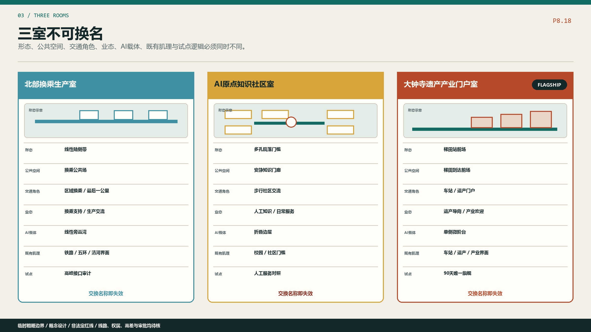
AI 原点：EDGE-HOUSE
EDGE-HOUSE 沿成府路公共侧形成可进入的知识门槛。基态提供遮荫、座椅、铁路与中关村时间标记、人工问询和不依赖 App 的信息；启用时，一间可开合房承载开放课、导师门诊或小型公共服务。匿名需求与无障碍状态可帮助 AI 建议时段和布局，教育、属地及公共利益责任人逐场批准；路径受阻、安静负担或公平性恶化即冻结并收回。
成府路作为唯一画完整的本地移动参考链，按“分时态 OSM 交通 / 街道起点 → 成府路已映射段 → 过街准入门 → 2.4 m 公共净线目标 → EDGE-HOUSE”组织。图中 access=yes 只表示相邻公共空间支撑要素，不能证明整条路线连续或权利成立；站口 / 电梯、过街、骑行停放、主体边、公共侧权利及后勤 / 消防通行均保留 TBC。2.4 m 是下一阶段控制目标而非现状测量。任一准入失败，链在该段停止，载体不展开，固定导视与人工服务点引导人回到既有已映射载体；AI_OFF 同样回到物理公共基底。
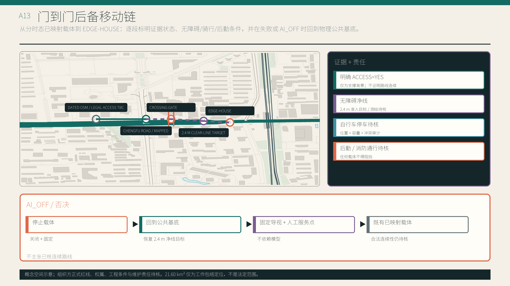
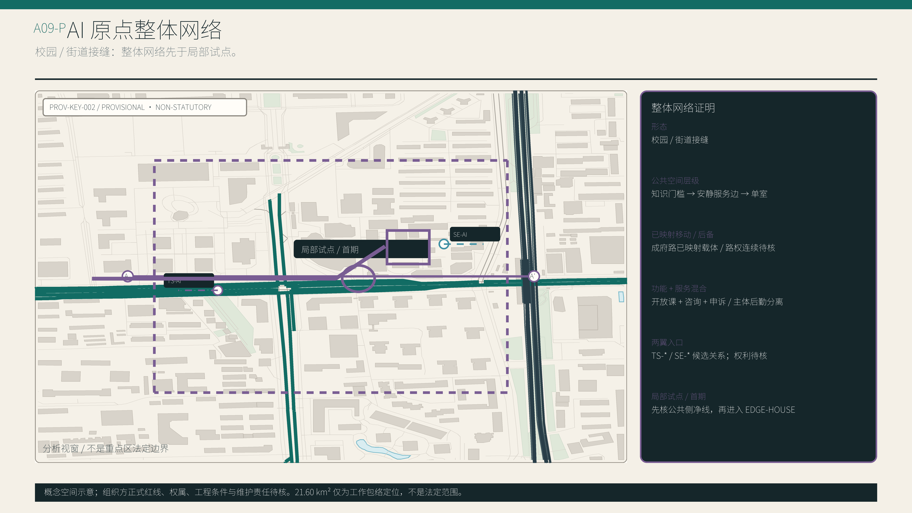
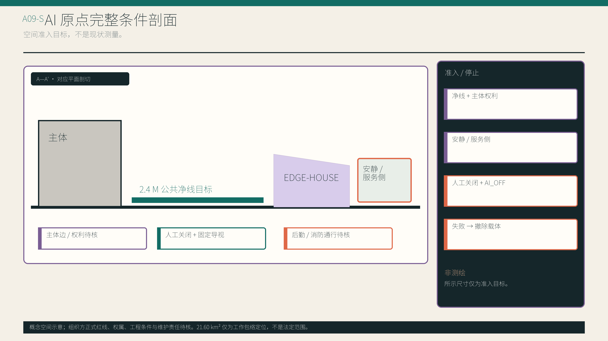
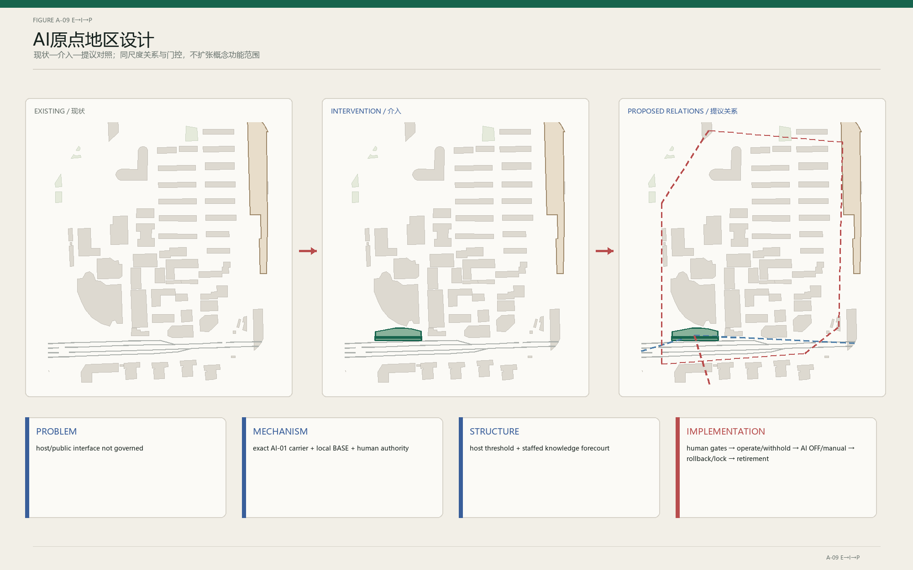
大钟寺：TERRACED FORECOURT
大钟寺把东侧到达净线的逐段核验作为准入前提，当前不宣称连续性成立。D1–D3 是位于概念公共带内的三个离散待测包络：每个由当前 EPSG:4548 几何派生约 20.66 × 18.05 m、约 367.47 m²，包络间净距约 16.67 m，总面积约 1,102.40 m²；这些数值不是现状测量或施工定位，站口、消防、遗产、权属和管线测绘后须逐个移位或撤回。若核验通过，TERRACED FORECOURT 每次只启用一个单元，用于咨询、演示或短停；到达状态时钟 / ARRIVAL-STATE CLOCK公开显示 BASE、ADVICE、ACTIVE、FREEZE、RETURN，并提示人工责任人。AI 可根据匿名预约、占用和人工观察建议开放、缩小或取消，任何通行、无障碍或安全冲突都会触发人工冻结。空间数据 空间数据
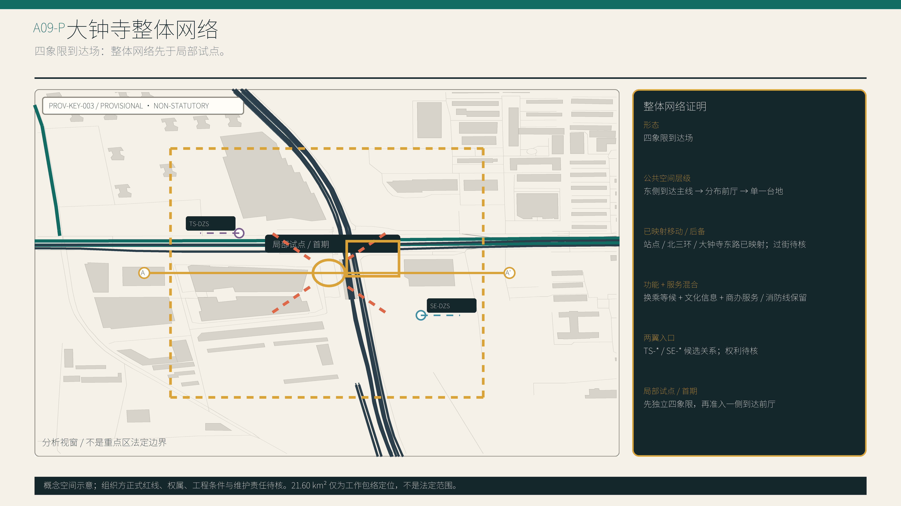
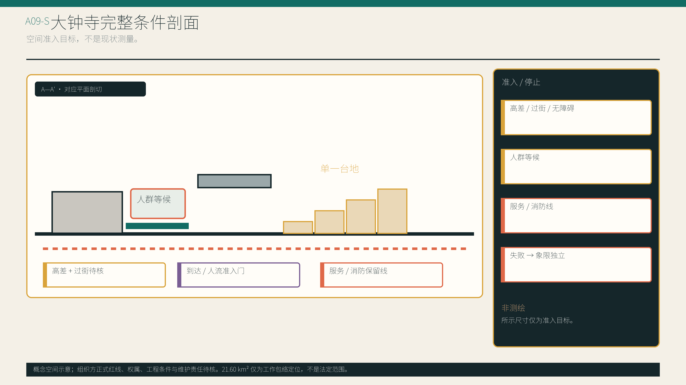
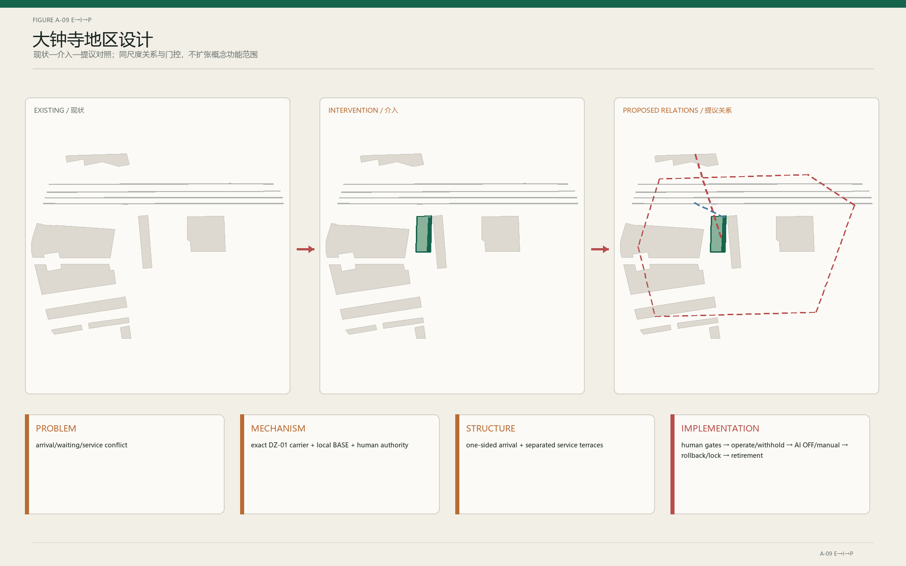
北部换乘（众智园验证点）：LINEAR SIDE-BAY
众智园在 0807-604—小月河陆侧设置 LINEAR SIDE-BAY 概念原型，只有核验通过的陆侧净线分段才可作为公共基底，未知处保持断开。侧湾可承载配送机器人安全验证、多语种历史解释或工程接口信息；水务、项目边界、公共进入和维护条件任何一项不成立，就不展开。AI 对已批准轨迹、速度、急停或内容版本提出建议，测试安全、属地和文化责任人分别批准；公众急停、误入、过期信息或维护缺位会使侧湾退回基态。
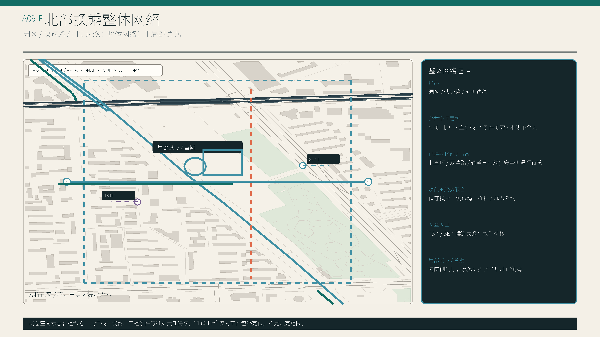
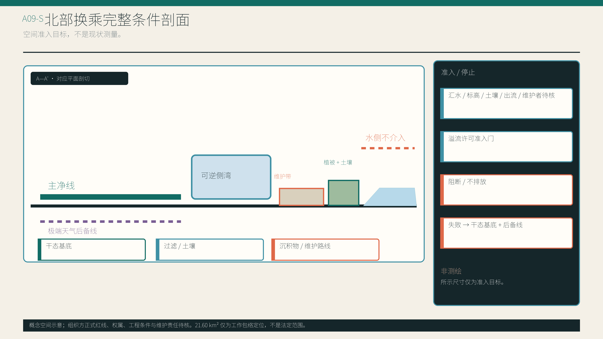
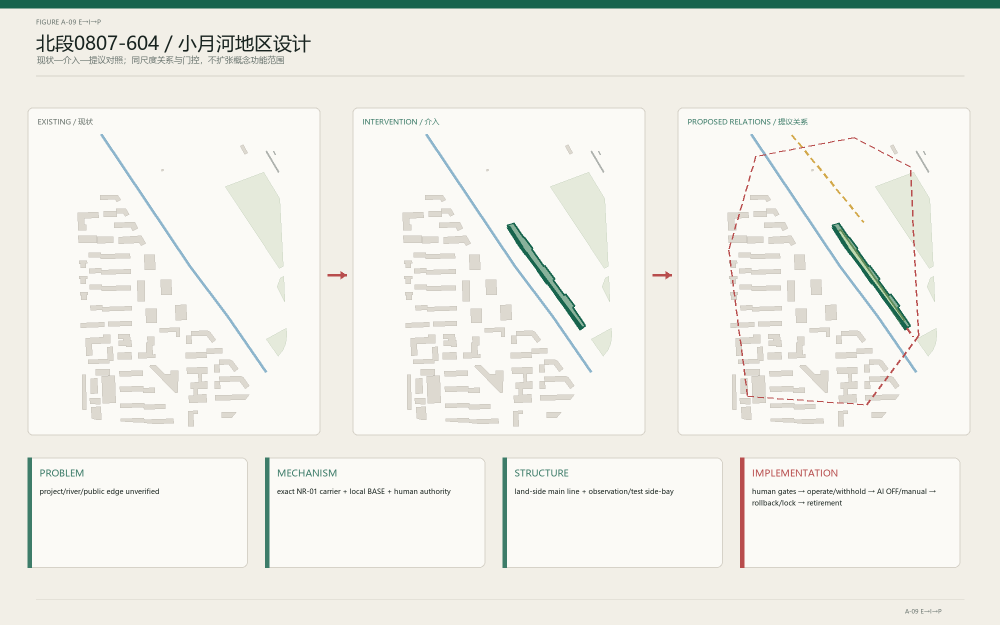
三个可工作的公共地标
“开放版本门”位于 AI 原点，展示来源、版本与纠错入口；“到达状态时钟”位于大钟寺，显示单元状态、责任和下一次复核；“退役侧湾”位于众智园验证点，展示测试边界、急停、失败与退役记录。三者都不是奇观：每日检查可读性与净线，每次启用前核验内容和机械锁定，维护逾期即停止显示或关闭可动部分，仍保留人工问询和固定信息。
遗址公园周边与大钟寺的两类 AI 公共机制
在京张铁路遗址公园周边，本方案只对已核实可进入的公共侧或既有公共空间提出机制，不推定公园边界、审批状态或连续步行路径。经核史料、公众问询、无障碍状态和现场承载条件可触发 AI 对内容次序、语言或一处可逆展示时段的建议；属地、文化策展和无障碍责任人决定是否采用。物理上形成一套铁路证据门槛：先由测绘与文化评估确认铁路方向和可见遗存，再在公共侧设置不接触遗存的轨向基准带、带来源编号的时间刻度和可撤除观察框；任何既有构件都按“原位保留优先 → 保护并解说 → 专项审查后适应性使用 → 不介入”的顺序决定，未经遗产审查不附着、不搬移、不复制。A3 第 16 页采用一张源文件为 4096×1904、印刷衍生文件为 2400×1116、CC BY-SA 4.0 的 2023-10-03 清华园站外观照片作为带日期视觉记录，并明确它不是 2026 现状、保护范围、权属或批准证据；1910 建造与 2013 文物普查登记来自海淀区政府公开记录，2026 状态仍须现场和文保档案复核。固定时间标记、人工问询和 AI 原点 EDGE-HOUSE 的获批单室承接解释与纠错；AI 离线时保留固定双语内容、纸面纠错和人工讲解。未通过权属、遗产、安全、无障碍或维护核验的段落保持缺口。来源 来源
大钟寺把 AI 原生消费与商务理解为单单元、短时、可取消的公共侧服务，不预设商业主体或固定业态。匿名预约、服务类型、到达与占用可触发 AI 对一个 TERRACED FORECOURT 单元的时段、排布或取消建议；属地、安全、无障碍和公共利益责任人批准或否决。获批单元可承载产品体验、公共咨询或临时商务会谈，主到达线和免费公共时段不变；AI 离线时采用人工预约、固定时段或直接取消。通行受损、筛客、误导、投诉累积或无法人工接管即冻结并收回。
评审路径 · 大钟寺旗舰
大钟寺旁置到达前厅是唯一旗舰。多尺度概念控制框架以定位意图、非比例总平与剖面、接口组件关系共同说明公共净线目标、安全缓冲、旁置服务带、维护撤场带、状态与人工服务点；D1–D3 尺寸只来自当前概念几何，全部待站口、消防、文保、权属与管线测绘后移位或撤回，不是现状实测、施工图或批准结论。空间数据 深度
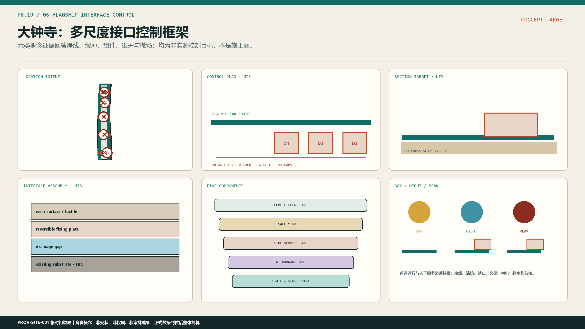
图 06｜大钟寺六类图纸：定位、总平、剖面、接口、组件与昼夜/高峰状态。
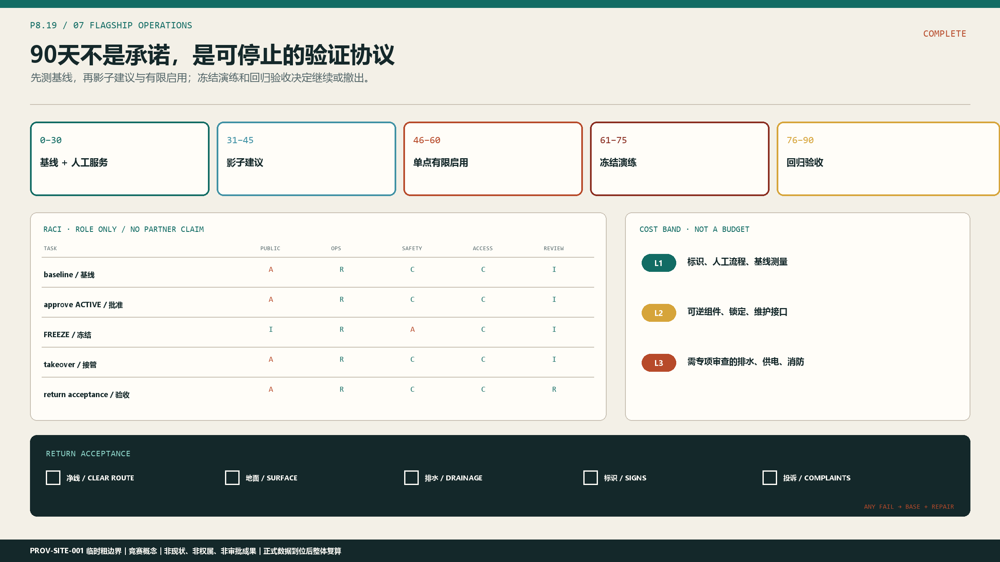
图 07｜90天试点、概念成本等级、RACI与回归验收；不虚构合作方、预算或开工时间。
评审路径 · 普通人旅程与五状态
无智能手机者、轮椅使用者、老年人和夜间到达者分别完成进入—求助—使用—拒绝/故障—人工接管—离开/申诉。ADVICE只改变信息，不改变空间；正式空间序列使用 BASE—ACTIVE—FREEZE—RETURN，且每条旅程在 AI_OFF 时仍可完成。指标 空间数据
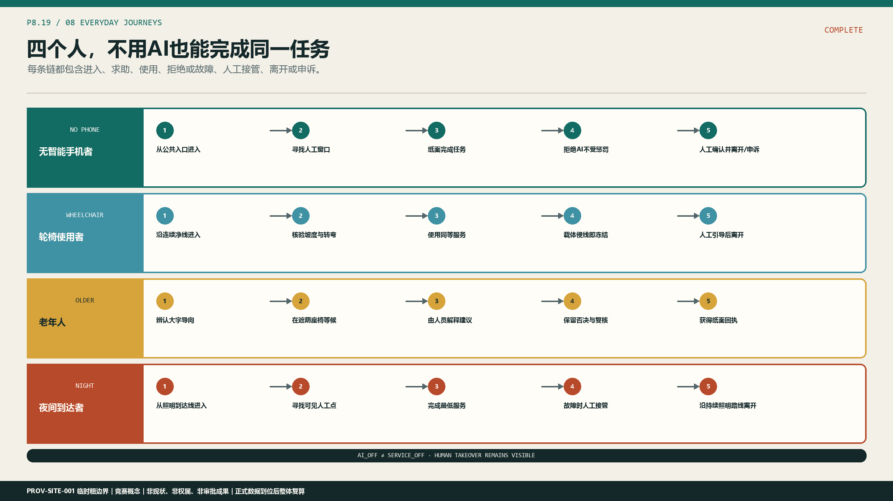
图 08｜四类普通人任务链与人工接管。
AI 创新生态、人才画像与 AI+ 场景
AI 原生并不等于屏幕更多，而是数据或事件能够触发一项可解释建议，经明确的人作决定，继而改变一处真实空间，并且在 AI 离线时仍有可用后备。方案优先服务四类受益对象：AI 人才获得学习、导师和真实问题；企业获得有边界、经合规前置核验的测试与中立转介；居民获得连续通行、公共知识、低门槛服务和申诉；公共治理获得风险筛选、状态记录、人工否决和退役证据。下表的六类使用与实施角色是另一种分类，用来说明人在什么场地行动、谁控制风险，并不增加新的空间分区。来源 来源
六类使用与实施角色
| 角色 | 使用需求与地点 | 人工控制与 AI 离线后备 |
|---|---|---|
| AI 研究者 | 公开问题、导师协作与可复现实验；AI 原点 EDGE-HOUSE、众智园 LINEAR SIDE-BAY | 教育/测试安全责任人批准；固定课表、室内测试与纸面记录 |
| 创业与企业团队 | 有边界验证、服务转介与短时会谈；众智园侧湾、大钟寺 TERRACED FORECOURT | 数据、安全、属地和公共利益前置核验；人工预约或取消 |
| 居民 | 连续通行、低门槛服务、安静与申诉；三地永久公共基底、AI 原点人工窗口 | 社区、无障碍与属地可否决；固定导向、纸面规则和人工服务 |
| 公共治理者 | 可解释建议、状态记录、纠错与退役；三个公共地标、年度证据会 | 分责签署、独立复盘；静态台账和人工审议 |
| 维护运营者 | 可进入检修、机械锁定与明确停用；三类载体维护侧、固定设施 | 维护者拥有冻结权；断电断网时机械锁定并保留基底 |
| 来访者或学生 | 清楚到达、双语知识与开放席位；AI 原点开放课、三地时间标记 | 教育/接待角色核验容量；现场报名、固定内容和人工导览 |
三条场地化 AI 原生链
AI 原点 · EDGE-HOUSE
| 触发与 AI 建议 | 人的决定 | 空间结果与 AI 离线 |
|---|---|---|
| 匿名课程需求、无障碍状态与安静时段触发一间房的时段/布置建议 | 教育、属地、无障碍与社区责任人批准或否决 | 单室展开，提供开放课与人工服务；离线时用固定课表、纸面报名和人工窗口 |
大钟寺 · TERRACED FORECOURT
| 触发与 AI 建议 | 人的决定 | 空间结果与 AI 离线 |
|---|---|---|
| 匿名预约、占用与到达观察触发一个单元的启用、缩小或取消建议 | 属地、安全、无障碍和公共利益责任人签署或冻结 | 单侧微阶台改变，主到达线不变；离线时用固定标线、人工疏导或取消活动 |
众智园验证点 · LINEAR SIDE-BAY
| 触发与 AI 建议 | 人的决定 | 空间结果与 AI 离线 |
|---|---|---|
| 已批准轨迹、急停、近失或内容版本触发继续、收缩、暂停或纠错建议 | 测试安全、属地、文化/水务相关责任人分别决定 | 侧湾有限展开、主线持续；离线时转为室内测试、人工导览或固定公告 |
最小数据、人工权力与申诉台账
| 场地 | 最小输入与禁止输入 | 权力与公众入口 | 可见物理状态、AI_OFF 与记录 |
|---|---|---|---|
| AI 原点 | 匿名需求、合格课程、净线容量；禁止人脸身份、社会评分与不透明资格推断 | 教育 / 属地批准，维护冻结；人工窗口和纸面表单受理申诉 | 门侧状态牌、单室展开与人工门闩；AI_OFF 后已批准场次人工运行至正常关闭，公开状态 / 事件记录，原始需求按公告复核期删除 |
| 大钟寺 | 预约类别、人工观察到达状态、无障碍净线容量；禁止生物识别排序与消费能力推断 | 属地 / 无障碍 / 安全批准或冻结；到达服务台受理申诉 | 面向到达线的状态牌、阶台展开或齐平撤收；AI_OFF 后受控撤收、固定标线与人工疏导，保留决定 / 投诉记录，原始预约按期删除 |
| 北部 | 已审测试编号、具名责任、安全 / 邻近事件；禁止超出测试包络的开放式追踪 | 测试安全 / 属地批准；物理急停和公共服务台触发复核 | 陆侧状态牌、闸门与机械锁隔离 ACTIVE / FREEZE；AI_OFF 锁定 FREEZE，人工释放或退役，保留签字事故记录并按期删除临时传感事件 |
上述权力顺序、申诉答复时限和数据留存期是下一阶段须确认的运营条件，不冒充已委任机构或已生效制度。
十二场景与三项产业测试
十二个场景分为三组：公共知识与教育包括人工服务分配、开放课公平匹配、多语种铁路记忆和公共服务障碍清除；真实环境验证包括峰值到达分配、配送机器人、单侧服务验证和工程接口提示；公共治理包括社区安静保护、极端天气冻结、三区开放日和季度公平/退役审议。每个场景均在 visual/assets/scenario-cards.json 中形成独立记录，逐项列出输入事件、AI 能力、人工批准者、物理动作、失败停止、AI_OFF 后备和证据路径；责任主体仍是待确认的角色类别，不伪称已有任命。深度 指标 空间数据
三项产业测试分别在 EDGE-HOUSE 比较知识与服务匹配，在众智园验证点比较全栈模型/工具/安全链，在大钟寺比较服务预约与到达。均需比较静态规则、训练后的人工流程和 AI 辅助流程；没有真实基线时不得宣称 AI 更优。净线、公平、安全、数据权限或人工接管任一项失败，就停止测试并恢复基态。空间数据
公共创新荣誉
荣誉墙只记录可核贡献：开源工具、公共问题修复、维护、无障碍改进、内容纠错和负责任的停止。每条记录都有来源、贡献角色、有效期和撤回方式；它不展示个人敏感信息，也不把融资、流量或媒体曝光当作公共价值。
辅助氛围证据
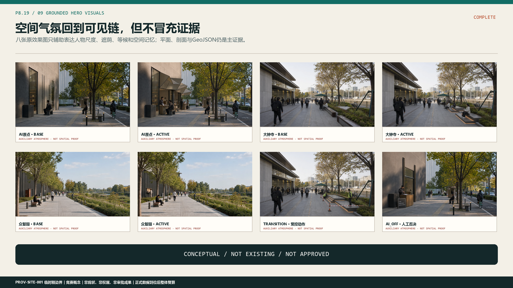
图 09｜八张空间氛围图恢复为辅助证据。CONCEPTUAL / NOT EXISTING / NOT APPROVED；它们只表达人物尺度、遮荫、等候与空间记忆，不证明路线、尺寸、权属或工程条件。
评审路径 · 实施与运营
实施遵循 BASE基线—人工服务—影子建议—有限启用—冻结演练—回归验收。责任只写为公共服务、场地运营、安全维护、无障碍/公共利益与独立复核等角色，不声称已有合作主体。成本采用 L1 标识与人工流程、L2 可逆组件与维护接口、L3 需专项工程审查三级，不给出伪精确预算。空间数据 深度
用地、建筑规模与拆改留方案
在官方控规、建筑测绘、权属、文保和工程条件不完整时，负责任的设计决定是先保护公共关系，而不是补画精确开发量。三类载体均附着于可核的公共侧或陆侧条件，默认保留现状主体，仅在边缘设置可逆构件；没有证据支持逐栋拆除、新建规模或用途变更。深度 深度
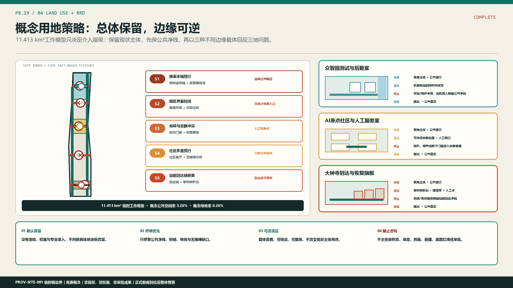
地区图不再把待确认的法定分类或空白边界当作设计成果。它用当前 11.413 km² 临时工作模型定位两条纵向公共界面、五个独立缝合问题和三类边缘载体；右侧分别说明保留、可逆适应、停止与回退，底部把默认保留、修缮优先、可逆适应和禁止虚构作为拆改留边界。公共空间率与概念绿地率仅由当前提交几何复算，用于方案自洽，不代表法定指标。正式资料到位后，按“现状—限制—公共价值—可逆介入—退出”逐地复核。
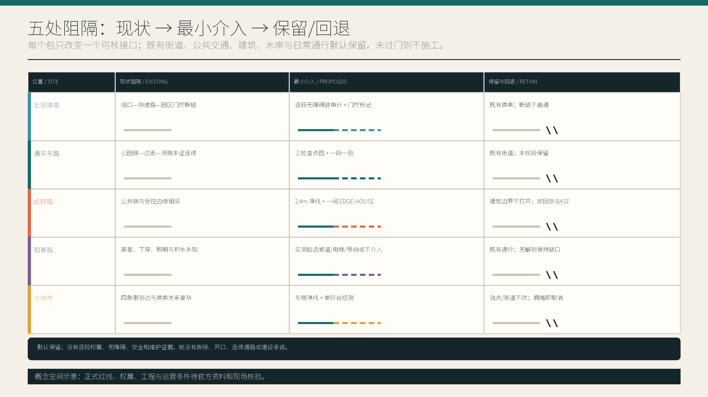
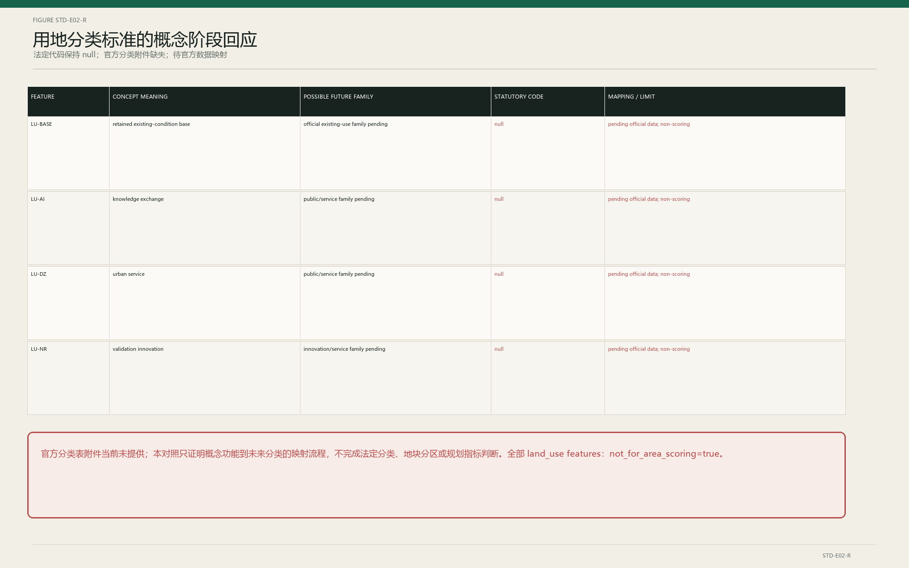
交通、轨道、市政与公共服务设施
交通设计的首要成果不是一条未经证实的连续绿道，而是“主系统—次系统—实施单元”嵌套关系和三条不能被活动占用的本地净线。北部换乘审计位先核站点邻近、快速路与水系交界处的合法通行和无障碍后备；清华东路分别核公园侧、过街和河侧；成府路保护 AI 原点公共侧；知春路只以 OSM 站点邻近位置作审计定位，具体下穿口、高差、照明与排水必须实测后再判断可达性；大钟寺分别核四象限到达、换乘与东侧主线。任何一包未通过时，既有街道、公共交通、固定导向和人工服务继续承担到达，不用彩色虚线冒充建成通路。来源 深度
三类载体在概念剖面中预留电力、低压数据、照明、排水、维护、机械锁定和应急净线，但不声称容量、接入许可或工程可行。每次转换前由相应专业人员检查；断电、断网或 AI 离线时，可动构件机械锁定，照明、固定导向、纸面规则和人工服务继续工作。深度
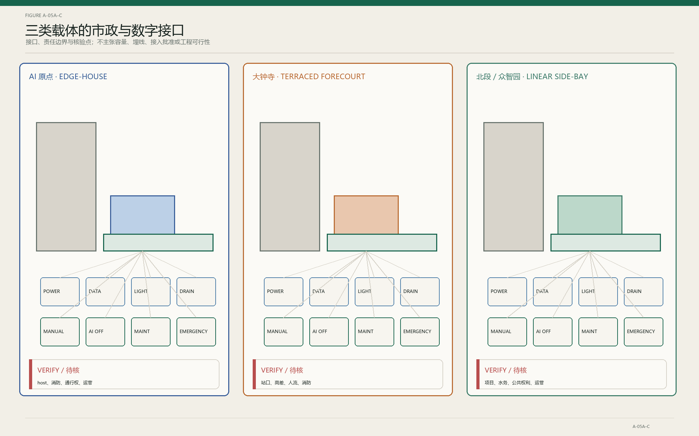
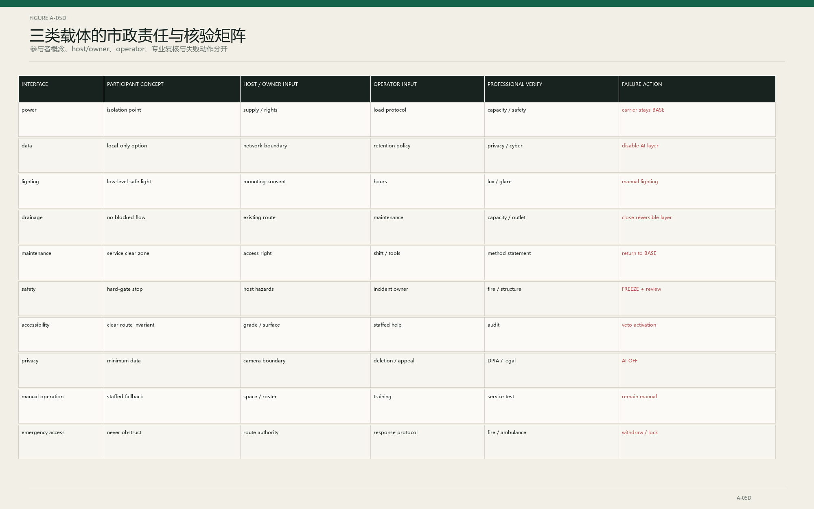
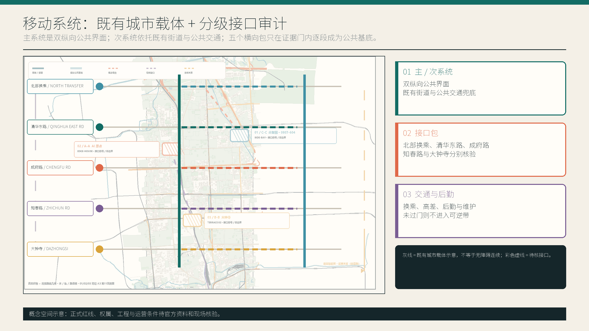
蓝绿空间、公共空间与城市风貌
公共空间采用“分段可核、缺口可见”的风貌逻辑。固定树荫、种植过滤候选、座椅、双语时间标记和人工问询构成安静背景；可逆界面以同一断续基线符号提示其临时状态。总体图把已登记水体 / 绿地、分时态工程关系、局部界面候选、维护通行待核和断开段分层表达，不把它们串成排水网络。北部换乘是唯一进入深度水界面审计的场地：只在陆侧画旱态基底、批准门后的局地截流候选、过滤介质概念、清淤检查、许可溢流门和“阻断 / 不排放”状态；遮荫、土壤与生境只作为公共空间支撑，不推定向小月河排放或任何水力性能。AI 原点和大钟寺主动降级为地表径流审计，明确“无已登记水体 / 不主张水力系统”，只保留低点、过滤界面和永久断开问题。现状标高、水位、土壤渗透、汇水边界、许可出流、维护路线与容量齐全后，才可由专业人员复算；此前不宣称调蓄量、峰值削减、洪涝安全或绿地率达标。深度
可步行、可纠错的百年文化叙事
文化路线由三类已核内容和公共动作组成，而不是虚构连续遗产步道。铁路事实来自清华园车站等资料，在 AI 原点形成固定日期、地点和方向标记；中关村开放知识传统通过开放课、人工讲解和问题征集进入 EDGE-HOUSE 与大钟寺服务前庭；AI 时代的版本、批准、否决、失败和退役记录分别进入开放版本门、到达状态时钟和退役侧湾。每段内容都标明来源、策展责任与纠错入口；未核实地点或故事不进入永久标记。来源 来源 来源
蓝绿证据采用“一处深证据、两处明确非系统”。北部换乘局部窗只把已登记的小月河相关水体作为既有背景，平面与 BG-N1 条件剖面同号对应；旱态、获准局地截流和阻断 / 不排放三种状态都不得占用主净线或水务维护区。AI 原点与大钟寺没有 OSM 已登记水体，因此不再复制北部的水体、出流或系统符号。汇水范围、标高 / 水位、土壤、容量、维护路径、许可出流和权利在正式资料到位前均为 TBC。来源
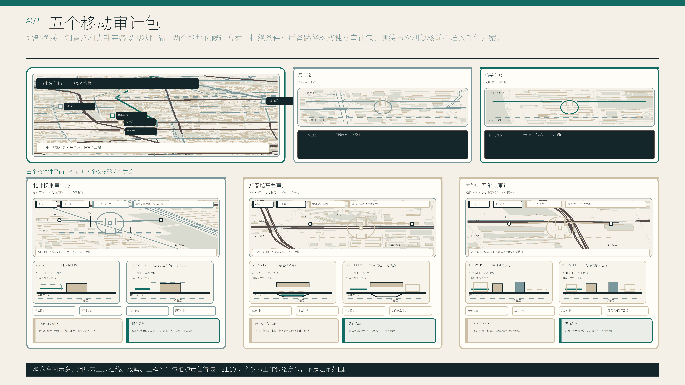
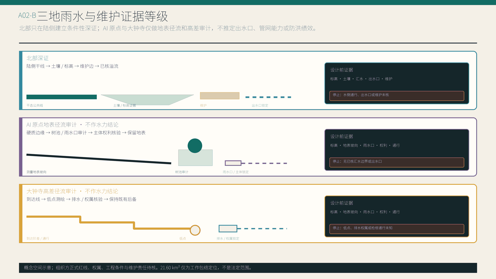
更新项目清单、实施政策与分期计划
实施从“能否安全保留公共基底”开始，而不是从活动日历开始。五个横向包在地区图上各有独立审计邻域、公共效用、首个物理动作或 verification-only 结论、准入证据、责任角色、后备与退役记录：北部换乘形成换乘—门厅无障碍审计，清华东路公开三系统接口核验图，成府路仅保留 2.4 m 净线与一间 EDGE-HOUSE 的后续审计任务，知春路只完成高差与下穿审计。当前分期几何统一为 P1 PH-P819-01-DAZHONGSI（大钟寺 1,102.40 m² 离散概念试点包络）、P2 PH-P819-02-ORIGIN（AI 原点审计/覆盖范围）和 P3 PH-P819-03-NORTHERN（北部审计/覆盖范围）；P2、P3 不是 90 天建设包络。每包都可在未通过专业门时以 no-build 结束。概念进入 P1 前须依次通过六道开放门，P2/P3 只决定复制、修订、异地复测或退役。当前所有机构名、预算数、许可号、保险和采购状态仍未知；任一门未过就不进入转换状态。空间数据 深度
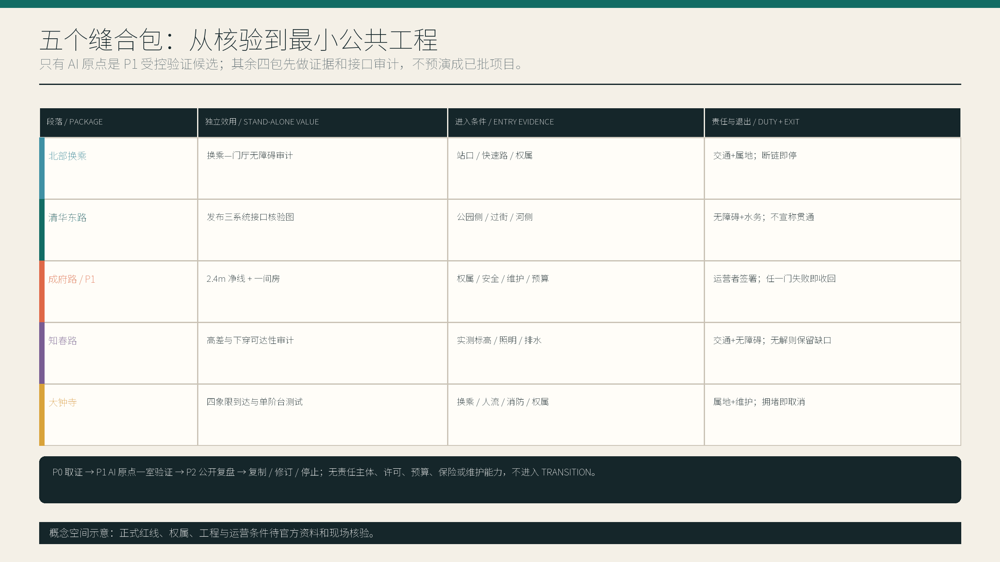
年度运营与转化闭环
十二个月被组织成四个季度，而非十二次孤立节庆。第一季度由公共治理与无障碍责任人公开问题、规则、申诉和退出条件；第二季度由教育、企业服务与测试安全角色筛选能力，在 AI 原点和众智园验证点进行最小原型；第三季度由属地、社区和维护角色观察大钟寺服务、极端天气和 AI 离线演练；第四季度由独立公开审议汇总公平负担、维护、失败和公共收益，决定复制、修订或停止。空间数据 空间数据
人才路径是开放课—导师—真实问题—公开成果；企业路径是资格核验—小规模测试—证据—中立转介；居民路径是问题提出—共同测试—申诉—修订；治理路径是规则—批准/否决—审计—退役。每月形成简短公开记录，每季度检查净线、公平、安全与维护，年末只保留有证据且责任持续的项目。未形成公共收益、无法维护或无法人工接管的项目退出，不以招商、融资或人流替代结论。
开发者社区与国际转化
开发者社区按“公开城市问题—加入与行为规则—导师配对—受控开发—场地测试—开放演示与文档—公众复盘—开源、孵化、转介或停止”运行。社区协调者负责问题与参与规则，数据责任人和测试安全责任人把守合规前置条件，属地与公共利益责任人决定能否进入场地；维护者可随时冻结。每月公开问题、版本和失败摘要，每季度复盘公共收益、参与公平与维护负担。无法说明来源、不能人工接管、反复侵占基底或没有维护责任的项目退出。来源
“基态开放季”的国际开放日或论坛不是传播终点。双语问题征集先进入资格核验，再通过短访、公开课或导师会谈形成地方问题匹配；只有通过场地、安全、数据和公共利益核验的团队才进入最小测试。人才可进入后续导师、研究或人才服务转介，企业可进入中立服务、复测或采购探索转介，但不保证录用、入驻、采购、投资或合作。国际交流主责与社区协调、企业服务、场地安全和公共治理角色分开；活动后一个月发布转化与停止摘要，季度复盘是否继续。未形成地方公共价值、只剩宣传诉求或无法承担维护责任的关系退出。
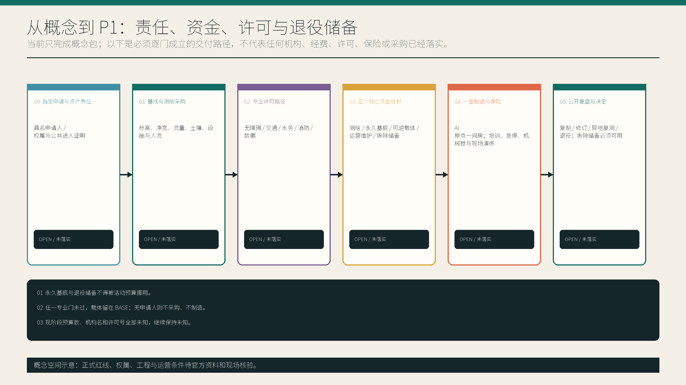
评审路径 · 六个核心指标
六项指标是未来90天试点的决策契约，不是已有绩效：非AI任务完成、无登录完成、状态切换时间、AI关闭时长、回归验收时间与公平负担差。每项均定义非AI基线、测量窗口、停止阈值、恢复条件和责任角色；其余指标移入结构化附录。指标 指标 指标
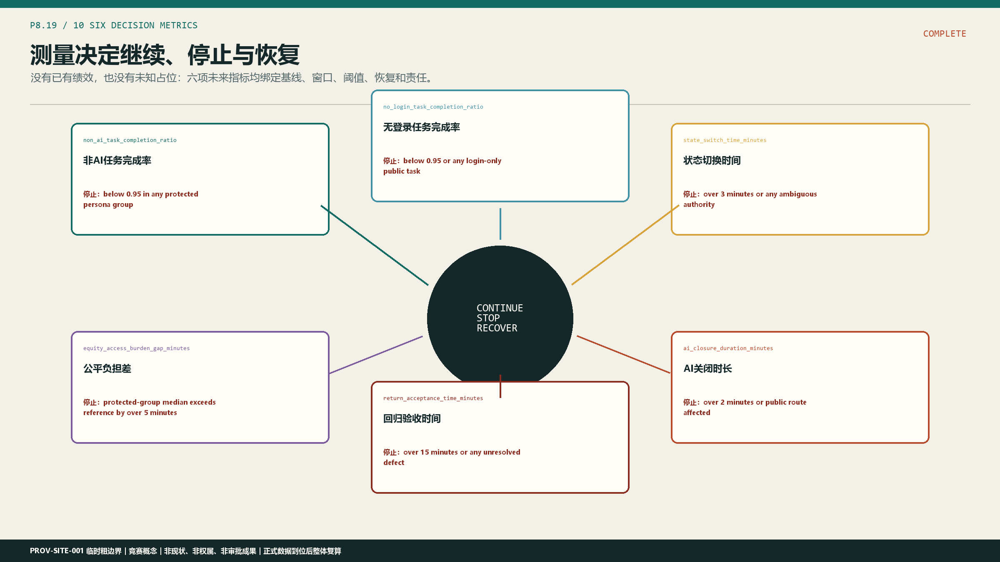
图 10｜六个继续/停止/恢复决策指标。
指标体系、面积复算与合规矩阵
评价把官方文字面积、临时几何和未来绩效分开。43.6 km²、11.4 km²、368.4 ha 及三个重点区面积是公告约数；当前官方临时几何 PROV-SITE-001 复算约 11.413 km²。公共空间比例约 3.26%、概念绿地比例约 0.26%，均由临时边界内的概念几何派生，只用于方案自洽检查，不作为法定规划指标或现状陈述；边界或设计图层更新后必须整体重算。指标 指标 指标
北部陆侧绿地不是剩余着色，而是一条待专业核验的被动雨洪门槛：硬化面径流截流 → 植草预处理 → 雨水花园滞蓄过滤 → 核验后溢流接入既有排水。AI 只可根据经检查的事件建议维护时机；AI_OFF 时被动滞蓄与安全溢流仍须工作。土壤、排水、水务、权利或专业景观审查任一未通过，就不得接入溢流，也不得宣称性能。空间数据 指标
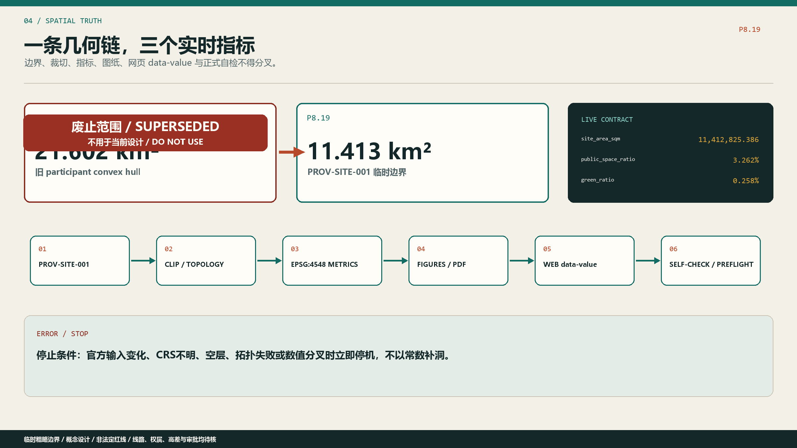
未来试点只记录可解释的分项指标：基态路径可用性、启用/冻结时长、人工否决、急停与近失、无障碍、投诉与申诉、公共名额、公平负担、维护工时、内容过期、AI/人工/静态规则差异和退役。没有基线就不设改善百分比；不把利用率、销售、招商或投资合成单一“智慧分数”。
评审路径 · 证据、来源与专业边界
主提案只保留评审理解所需的证据锚点；完整来源、假设、标准、设计深度、任务覆盖、GeoJSON和复算公式位于结构化文件与专业审查入口。临时边界、重点区、尺寸、材料、排水、权属、文保、消防、成本与运营均不得被解释为现状事实或审批成果。来源 深度
风险、版权与合规说明
主要风险及对应退出如下：精确范围与权属缺失时，不扩大载体并重新落位；大钟寺到达或无障碍冲突时，取消单元并保留主线；众智园水务、项目边界或公共进入未通过时，侧湾不展开；历史内容有争议时，撤下可变内容、保留来源与纠错入口；数据权限、模型表现或人工接管失败时，停止 AI 建议并恢复静态/人工流程；维护者、预算、保险或许可缺位时，可动构件锁定或退役。任何风险都不能通过降低永久公共服务来“优化”。深度
文字、图表和参赛者原创设计按本包声明的 COMMUNITY-DISPLAY-ONLY 条款展示；第三方事实、法律、标准、网页与底图仍归各权利人，其出处和使用边界见参考资料。概念效果图不作为场地事实、审批或工程证据。公开展示不得暗示政府、机构、场地主体或案例方已批准、合作或背书。
本成果是竞赛概念城市设计，不替代法定规划、测绘、工程设计、交通与市政论证、文保/水务/消防/无障碍审查、采购或属地审批。正式数据到位后，所有依赖边界、权属、建筑与容量的图件和指标须重新核验。
参考资料
以下为正文使用的精选资料；完整来源、取得日期、许可与限制记录保存在提交包的结构化来源清单中。
1. 北京市规划和自然资源委员会海淀分局：《百年京张AI创新带城市设计国际方案征集资格预审公告》。 2. 征集组织方：《面向全球智能体开展百年京张AI创新带城市设计开源征集任务书摘录》。 3. 清华大学校史馆：《清华园车站与清华大学》；《见证进京“赶考”历史的百年清华园车站》；北京市海淀区人民政府：《北京市第一批！海淀这13处革命文物名录公布》；李汉宗（Lhzss8）：QINGHUAYUAN STATION OLD HOUSE 202310，Wikimedia Commons，CC BY-SA 4.0。 4. 北京市科学技术委员会、中关村科技园区管理委员会：《中关村示范区》。 5. City of Cambridge Community Development Department, Volpe Site Rezoning. 6. MaRS Discovery District, About MaRS. 7. Établissement public d’aménagement Paris-Saclay, Innovation. 8. JTC Corporation, Punggol Digital District. 9. Seoul Metropolitan Government, Seoul AI Hub. 10. City of Helsinki / Business Helsinki, Testbed Helsinki — A testing platform for new innovations. 11. 国家互联网信息办公室等七部门：《生成式人工智能服务管理暂行办法》。 12. 全国人民代表大会常务委员会：《中华人民共和国无障碍环境建设法》。
来源 来源 来源
本方案的边界、强度、建筑、市政和实施内容均保持概念属性；证据不足处明确保留，不以图面完整感替代事实。